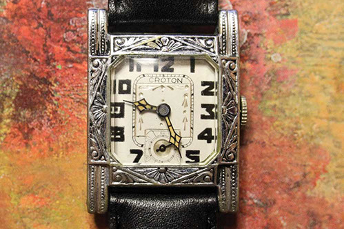
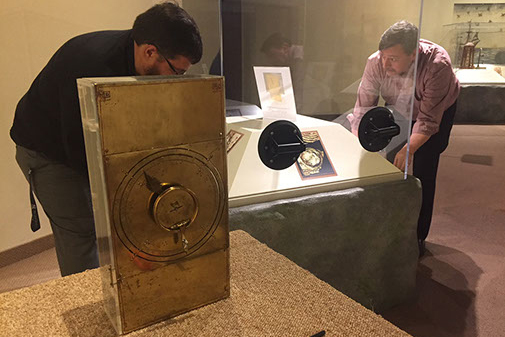

Watch Blog | WatchNews
FEATURES
|
WATCH BLOG
|
PRESS RELEASES
|
ABOUT US
Watch Blog
It's About Time
- By Keith Lehman (PA) 07/30/18
Immediate Opening for Hamilton Watch Co. Fellow
- By Fortunat Mueller-Maerki Library and Research Center (PA) 7/26/18
The NAWCC: Harbor of Hamilton Watch Co. History
- By Keith Lehman (PA) 07/16/18
Christianson V. Smartwatch
- By Taylor Mason (PA) 07/09/18
HODINKEE Vol. 2: A Designers Perspective
- By Chase Monico (PA) 07/02/18
Review: David Christianson's Timepieces: Masterpieces of Chronometry
- By Taylor Mason (PA) 6/25/18
NAWCC Lunch "Time" Debuts zSpace/Grand Seiko 3D Learning
- By Freda Conner (PA) 6/18/18
Review: GX1 Swiss Made Chronograph
- By Chase Monico (PA) 6/11/18
Fun You Can Watch
- By Sara Butler-Tongate (PA) 6/05/18
Four Fresh Faces for LIV’s Breakthrough
- By Chase Monico (PA) 5/31/18
Progression of Wristwatch Styles: Part 2: 1920—1939: Art Deco, Smaller Is Better, and Technology Advancements
- By Randy Jaye (FL) 5/23/18

Swiss-Made Startup Raises Millions
-By Keith Lehman (PA) 5/16/18
Part 1: Progression of Wristwatch Styles: From Bracelet Watches to Smartwatches
- By Randy Jaye (FL) 5/03/18
Archaic Calculator Confounds Assumptions of the Ancient World
-By Keith Lehman 4/13/18

Review: HODINKEE Magazine Volume 1
-By Keith Lehman 3/16/18
Hamilton Celebrates 100 Years of Timing the Skies—with a Little Help from Their Friends
-By Keith Lehman 3/12/18
RGM’s 151-PR Professional Pilot Turns Two
-By Keith Lehman (PA) 2/23/18
The First Generation Apple Watch
-By Keith Lehman 2/20/18
PREVIOUS
1
2
NEXT